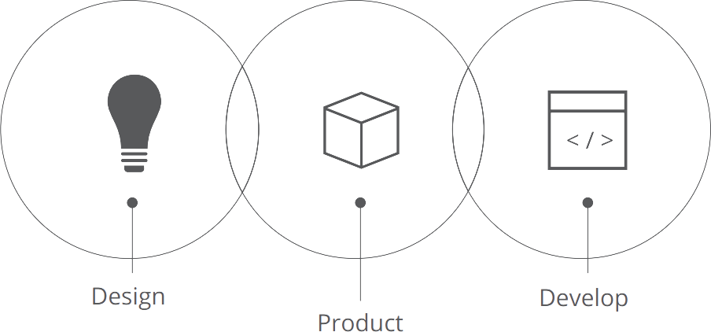

4 Pine Tree Drive
New Paltz, NY 12561
914-474-4320
Introduction
A software engineer focused on networks & cloud computing with real world industry experience.
Desires to transition from a software engineer into a network engineer, plus hybrid cloud engineer.
Detailed technical portfolio is available in mmulcahy222.github.io
Proponent of Network Automation & NetDevOps.
Insatiable, obsessed lifelong learner who strives to have a PhD level of understanding for business objectives.
Cisco CCNA certified, has CCNP Route, with knowledge of CCNP switching & troubleshooting.
Full Stack Web Developer for WordPress & Magento E-Commerce stores in PHP.
Amazon AWS Solutions Architect with ambitions of achieving certifications for Google Cloud Architect & AWS Cloud Networking Specialty.
Wants to relocate to another area.
Flexible to be in an entry, mid-level or senior role with upward mobility.
Aspires to get Google Cloud Certifications in all levels.
Aspires to know C++ & Assembly a lot better to understand the inner workings of computers and the code behind routing protocols & new features in Cloud Computing.

Experience
Freelancer
Software Engineer/Web Developer (2011-present)
Detailed explanations of my freelance work & Cisco work is located in https://mmulcahy222.github.io
Made Amazon Alexa voice-enabled games for a game company, which consisted of Hangman & Number Guessing. The latter was once in the top #100 Alexa skills for www.amazon.com
Created interactive maps leveraging Google Maps API & create web pages for a custom post type in WordPress for an Nebraska real estate company (http://lanoharealestate.com/)
Created a detail view, a semi-detailed "listing" view, and a simple one-line list view for various custom post types in Wordpress (www.strumandspirits.com), and converted them as WordPress shortcodes & integrated them with Elementor Plugin.
Coded my own version of Telnetlib using low-level sockets & Asyncio, for both learning & utility purposes. The purpose of this was for network automation & interfacing with Cisco Network Equipment using Python.
Coded three classes called SSH, CommandLine & Netconf which uses Python to interface with Network Equipment via SSH, with unique Netconf related tasks cleanly placed in it's own separate Python subclass (from SSH).
Implemented multiple custom features for a variety of Magento e-commerce websites such as www.altonlane.com, www.sdintegrated.com, www.mothercare.co.id, and store.nobelbiocare.com.
Customized the entire checkout process for www.mothercare.co.id, including a store pickup option. I customized the display/layout throughout the entire site, and wrote CRON jobs and order feeds which synchronized with Mothercare’s Point-Of-Sale software at RetailPro.
Added a myriad of custom features for Nobel Biocare. I used Magento’s modular MVC architecture to add features throughout the entire site, such as quick view, recent orders, a custom display of subcategories & attribute information, and a Salesforce CRM solution for Nobel Biocare using a Magento adapter module which utilized www.force.com API.
Nimli
Magento E-Commerce Store Developer (Oct 2010-Jul 2011)
Created an online marketplace which sells natural & organic products, located at www.newpaltzartist.com/saffron. This e-commerce store operates on the Magento PHP platform.
Responsible for the entire front-end design of all the pages in www.newpaltzartist.com/saffron, I did the CSS styling for this site.
Imported 43,000 products+ into the store using a custom PHP solution. Similarly imported categories & attributes & images & data.
Spent extensive amounts of time isolating & debugging problems that arose during development.
Implemented many features to the online store to improve user experience and boost user retention & sales. Some of the features were programmed from scratch (bestselling products, new products, products on sale, color swatches, gift wrap options).
I did this entire project myself (both front-end and back-end), and the site is right now in production. This is a full-fledged e-commerce site with customers purchasing from this storefront.
Bank Of America
Data Entry (Every spring season from 2006 to 2010)
Data Entry for New York state tax returns.
Second line of defense in repairing other's data entry errors.
Earned raved reviews and was one of the fastest typers at 120 WPM.
New Global Marketing
Distribution Worker (Aug 2008-Oct 2008)
Packed, scanned and shipped outgoing items & charged buyers.
Education
Bachelor Of Science, Computer Science
SUNY New Paltz, New Paltz, NY (2007)
Certifications
Sun Certified Java Programmer
2007
Sun Certified Web Component Developer
2008
Magento 2 Certified Professional Developer
Feb 2013
Cisco Certified Network Associate (CCNA)
Oct 2015
Cisco Certified Network Professional Routing (CCNP Route)
Nov 2017
Amazon AWS Solutions Architect
Nov 2019
LANGUAGES
Python
(4 years)
PHP
(8 years)
JavaScript
(12 years)
C++
(2 years)
Java
(2 years)
Skills
Software Engineering:
Python
PHP
JavaScript
Design Patterns
Software Modeling
C++
Java
Assembly
Sublime Text
VSCode
Microsoft Win32 API
Git
Networking:
Cisco iOS
Routing (OSPF/EIGRP/BGP)
Switching
Network Automation/Programmability/NetDevOps
Python
GNS3
NETCONF
Jinja2 Templates
Cloud Computing:
Amazon AWS
Google Cloud
VPC/VPN
Hybrid Cloud
Lambda Functions
Voice Interfaces for Alexa Skills & Google Home Actions